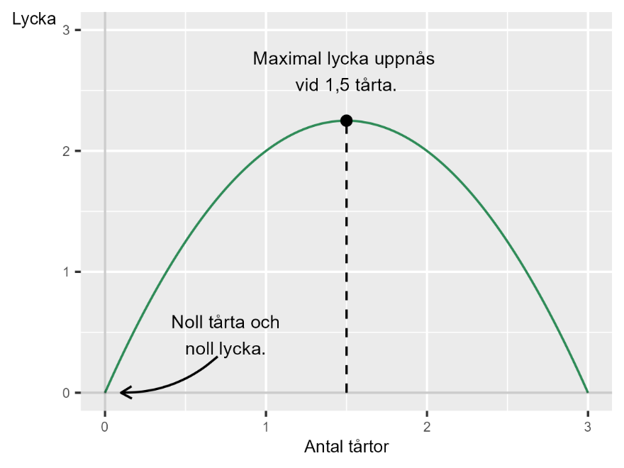

16 Den optimala mängden tårta
16.0.2 Teori
Tårta är gott men vi blir illamående om vi äter för mycket. Låt oss beskriva detta med matematik. Vi tänker att tårta gör oss lyckliga och kallar variabeln lycka för y.
Låt oss säga att vi mäter lycka på en skala från 1 till 5, där 5 är mesta möjliga tänkbara lycka. Lycka, y, är i sin tur en funktion f av hur många tårtor vi äter. Vi betecknar antal uppätna tårtor som variabeln x. För varje tårta vi sätter i oss ökar vår lycka med 3 enheter, vilket vi kan beskriva med funktionen:
\[Lycka = y = f(x) = 3x \tag{1}\]
Variabeln x är kontinuerlig och för varje tugga tårta vi äter blir vi lyckligare. Men vi blir även mättare och till slut börjar vi bli less på tårta. Denna negativa effekt på lyckan kan vi sätta in i vår funktion genom att lägga till termen \(- x^{2}\). Termen är negativ eftersom den beskriver hur vår lycka minskar för varje tugga tårta.
Termen \(- x^{2}\) är kvadratisk, upphöjd till 2. Detta innebär att för låga värden, till exempel 0,5 kommer den negativa effekten att vara relativt liten. Till exempel: \(- (0,5)^{2} = - 0,25\) eller \(- (0,1)^{2} = \mp 0,01\). Men för högre värden av x kommer i stället den negativa effekten bli allt större, som till exempel \(- (2)^{2} = - 4\) eller \(- (5)^{2} = - 25\). Hela funktionen blir nu:
\[y = f(x) = 3x - x^{2} \tag{2}\]
16.0.3 Tårta som maximeringsproblem
Det här kan vi beskriva som ett maximeringsproblem där vi väljer mängd tårta att äta, x, för att maximera vår lycka, y:
\[\max_{m.h.t.\ \ x}{f(x) = 3x - x^{2}} \tag{3}\]
För att beräkna vilken mängd tårta som leder till största möjliga lycka beräknar vi första- och andraderivatan av funktion f med hänsyn till x:
\[f_{x}' = 3 - 2x \tag{4}\]
\(f_{xx}^{''} = - 2\) För att hitta den lyckomaximerande mängden tårta sätter vi förstaderivatan \(f_{x}'\) lika med 0 och löser för x:
\[x^{*} = \frac{3}{2} = 1,5 \tag{5}\]
Andraderivatan \(f_{xx}^{''}\) i ekvation 4 är negativ. Detta indikerar att \(x = 1,5\) är en maximipunkt. Den mängd tårta som leder till mesta möjliga lycka är en och halv tårta. För att beräkna mängden lycka vid \(x^{*} = 1,5\) tar vi:
\[f\left( x^{*} = 1,5 \right) = 3*1,5 - (1,5)^{2} = 4,5 - 2,25 = 2,25 \tag{6}\]
En och en halv tårta ger 2,25 i lycka, där lycka mäts på en skala från 1 till 5. Exakt hur stor lycka som uppnås genom tårtätande är dock i detta exempel inte centralt.
Figur 1 illustrerar detta exempel och dess lösning. Till vänster och höger om \(x = 1,5\) kan vi se att lyckan är mindre än 2,25. Vid noll mängd tårta (0 på horisontella axeln) är lyckan lika med noll. På samma sätt är lyckan lika noll när mängden tårta är 3, vilket i det här hypotetiska exemplet innebär att vi då ätit så mycket tårta att vi inte längre njuter av det alls.
Figur 1. Den optimala mängden tårta.

16.0.4 Marginaleffekten
Ett annat sätt att beskriva detta fenomen är med hjälp av begreppet marginaleffekt. Generellt syftar begreppet marginaleffekt på hur ett resultat förändras vid små förändringar i en variabel. I detta fall hur mycket den totala mängden lycka ändras vid små förändringar av mängden tårta.
Vi söker den mängd tårta där marginallyckan är lika med 0, där förstaderivatan av funktion f är 0, \(f_{x}' = 0\). Det värde av x där \(f_{x}' = 0\) är en extrempunkt. Om andraderivatan är negativ innebär små förändringar av x vid \(x^{*}\) att lyckan minskar. I så fall är extrempunkten en lokal maximipunkt. Eftersom ekvation 2 endast har en maximipunkt är detta även en global maximipunkt, det vill säga den punkt där lyckan som ges av tårtätande är mesta möjliga.
16.0.5 En metafor för mänskliga beslut
Exemplet är banalt men introducerar de grundläggande logiska utgångspunkterna i en stor mängd teorier som förekommer rikligt inom samhällsvetenskap. Mycket samhällsvetenskaplig teori kan formuleras som att människor, eller organisationer där människor verkar, försöker uppnå ett eller flera mål, genom att välja mellan olika alternativ. Många teorier kring mänskligt beteende kan därför formuleras som maximerings- eller minimeringsproblem.
Det kan dock vara bra att påminna sig själv om att oavsett hur snillrik en teoretisk modell må vara säger den i sig självt ingenting om hur någon tänker när de ska äta tårta, eller fatta någon annan typ av beslut. För att veta något om verkligheten behöver vi information om verkligheten.
Övningar